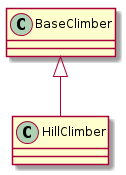

The HillClimber is the most basic of the local optimizers.

HillClimber |
|
HillClimber.__call__ |
Since this isn’t a production-level searcher I’ll save the solutions to a list, but once better heuristics are created they should be sent to a persistent target.
The HillClimber implements a simple hill-climbing optimization. It has three dependencies:
- StopCondition
- Tweak
- Quality
As well as an initial solution to start the search.
I’ll use the simulated data-sets to create an example of how this might work. The first case will be a standard-normal curve.
NormalSimulation |
StopConditionIdeal |
UniformConvolution |
XYSolution |
|
XYTweak |
IN_PWEAVE = __name__ == '__builtin__'
def run_climber(climber):
start = time.time()
solution = climber()
end = time.time()
print "solution: {0}".format(solution)
print "Ideal: {0}".format(simulator.ideal_solution)
print "Difference: {0}".format(solution.output - simulator.ideal_solution)
print "Elapsed: {0}".format(end - start)
return
if IN_PWEAVE:
import datetime
from tuna.qualities.normalsimulation import NormalSimulation
from tuna.parts.stopcondition import StopConditionIdeal
from tuna.tweaks.convolutions import UniformConvolution
from tuna.parts.xysolution import XYSolution, XYTweak
import time
import numpy
import matplotlib.pyplot as plt
simulator = NormalSimulation(domain_start=-4,
domain_end=4,
steps=1000)
stop = StopConditionIdeal(ideal_value=simulator.ideal_solution,
delta=0.0001,
time_limit=datetime.timedelta(seconds=300))
tweak = UniformConvolution(half_range=0.1,
lower_bound=simulator.domain_start,
upper_bound=simulator.domain_end)
xytweak = XYTweak(tweak)
inputs = numpy.random.uniform(simulator.domain_start,
simulator.domain_end,
size=1)
candidate = XYSolution(inputs=inputs)
# this is a kludge until I get the call-ordering worked out
# right now the simulator is setting the .output as a side-effect
simulator(candidate)
climber = HillClimber(solution=candidate,
stop_condition=stop,
tweak=xytweak,
quality=simulator)
run_climber(climber)
def plot_solutions(filename, climber, title):
output = 'figures/{0}.svg'.format(filename)
figure = plt.figure()
axe = figure.gca()
data = [solution.output for solution in climber.solutions]
axe.plot(data)
axe.set_title(title)
figure.savefig(output)
print '.. figure:: ' + output
return
Inputs: [ 3.26928757] Output: 0.00189308709596
Inputs: [ 3.22201226] Output: 0.00221274266817
Inputs: [ 3.13843485] Output: 0.00292788578651
Inputs: [ 3.11268099] Output: 0.00315601631642
Inputs: [ 3.09300512] Output: 0.00331683137455
Inputs: [ 3.08625728] Output: 0.00339995910683
Inputs: [ 3.02754456] Output: 0.00403595192244
Inputs: [ 2.96164755] Output: 0.00500830575564
Inputs: [ 2.88120038] Output: 0.00632711867023
Inputs: [ 2.79823798] Output: 0.00794211321393
Inputs: [ 2.77123512] Output: 0.00849203971355
Inputs: [ 2.67966055] Output: 0.0110359377309
Inputs: [ 2.66305844] Output: 0.0115182244779
Inputs: [ 2.63575635] Output: 0.0122755540991
Inputs: [ 2.54393521] Output: 0.0157455133096
Inputs: [ 2.53694365] Output: 0.0160688737358
Inputs: [ 2.4932306] Output: 0.0177709544893
Inputs: [ 2.45490968] Output: 0.0196218435258
Inputs: [ 2.42023909] Output: 0.0212159137666
Inputs: [ 2.37528298] Output: 0.0238072441624
Inputs: [ 2.36644526] Output: 0.0242634682713
Inputs: [ 2.3338906] Output: 0.0261607018028
Inputs: [ 2.32618693] Output: 0.0266534782355
Inputs: [ 2.27075454] Output: 0.030318351697
Inputs: [ 2.23569608] Output: 0.0325885676153
Inputs: [ 2.23088614] Output: 0.0331768819266
Inputs: [ 2.13575706] Output: 0.0409172810977
Inputs: [ 2.11631929] Output: 0.0423345934815
Inputs: [ 2.0933156] Output: 0.0445317184006
Inputs: [ 2.02625395] Output: 0.0508208032913
Inputs: [ 1.93138013] Output: 0.0614833566965
Inputs: [ 1.83441953] Output: 0.0736992620816
Inputs: [ 1.79566727] Output: 0.0792635427738
Inputs: [ 1.73565514] Output: 0.0887568329195
Inputs: [ 1.68755641] Output: 0.0963559002167
Inputs: [ 1.64088594] Output: 0.104364359146
Inputs: [ 1.6104854] Output: 0.108520847649
Inputs: [ 1.59183188] Output: 0.112777766497
Inputs: [ 1.52218265] Output: 0.124611722285
Inputs: [ 1.49285899] Output: 0.130785076467
Inputs: [ 1.45554838] Output: 0.13873328475
Inputs: [ 1.38829498] Output: 0.151959693008
Inputs: [ 1.36478599] Output: 0.157072181632
Inputs: [ 1.3400005] Output: 0.162262995642
Inputs: [ 1.33055884] Output: 0.164010074676
Inputs: [ 1.31809361] Output: 0.167528634438
Inputs: [ 1.27322497] Output: 0.178269153551
Inputs: [ 1.25632653] Output: 0.181906876288
Inputs: [ 1.21698817] Output: 0.191114666374
Inputs: [ 1.1653346] Output: 0.202352619114
Inputs: [ 1.10455809] Output: 0.217588339862
Inputs: [ 1.05018124] Output: 0.229145318181
Inputs: [ 1.03592397] Output: 0.233012904857
Inputs: [ 0.97233277] Output: 0.248508870906
Inputs: [ 0.93031405] Output: 0.258174268732
Inputs: [ 0.84108949] Output: 0.27920194574
Inputs: [ 0.8340255] Output: 0.281088284592
Inputs: [ 0.8271312] Output: 0.282969221005
Inputs: [ 0.81314486] Output: 0.286713772984
Inputs: [ 0.75584446] Output: 0.299608418784
Inputs: [ 0.7494918] Output: 0.301419927783
Inputs: [ 0.74242062] Output: 0.303222943864
Inputs: [ 0.67780378] Output: 0.317307420087
Inputs: [ 0.64374772] Output: 0.324093931834
Inputs: [ 0.56284172] Output: 0.340171591776
Inputs: [ 0.48892331] Output: 0.353379417987
Inputs: [ 0.43340728] Output: 0.362700840726
Inputs: [ 0.35531672] Output: 0.374398904813
Inputs: [ 0.33393699] Output: 0.3775089799
Inputs: [ 0.3121618] Output: 0.380425262678
Inputs: [ 0.25809971] Output: 0.385657258719
Inputs: [ 0.23704049] Output: 0.387964160737
Inputs: [ 0.21246026] Output: 0.390059672672
Inputs: [ 0.20521723] Output: 0.39071057452
Inputs: [ 0.16498678] Output: 0.393602615166
Inputs: [ 0.09945784] Output: 0.396948572009
Inputs: [ 0.06626491] Output: 0.398019148061
Inputs: [-0.0204] Output: 0.398862340139
solution: Inputs: [-0.0204] Output: 0.398862340139
Ideal: 0.398939082483
Difference: -7.67423442817e-05
Elapsed: 0.0307440757751
Now a Needle in a Haystack case.
if IN_PWEAVE:
# make the target different so we know the data changed
simulator.reset()
#simulator.functions = [lambda x: 10 * x + 5]
simulator.domain_start = -100
simulator.domain_end = 150
simulator.steps = 1000
candidate.output = None
simulator(candidate)
climber.solution = candidate
stop._end_time = None
stop.ideal_value = simulator.ideal_solution
# this takes forever, make it lenient
tweak = UniformConvolution(half_range=1,
lower_bound=simulator.domain_start,
upper_bound=simulator.domain_end)
xytweak = XYTweak(tweak)
stop.delta = 0.001
climber.tweak = xytweak
print "Ideal: {0}".format(simulator.ideal_solution)
run_climber(climber)
Ideal: 0.396948572009
Inputs: [ 2.62657216] Output: 0.0134913210327
Inputs: [ 1.95458758] Output: 0.0718182846986
Inputs: [ 1.41627596] Output: 0.16009085669
Inputs: [ 1.21895343] Output: 0.217588339862
Inputs: [ 0.33365222] Output: 0.375194313756
Inputs: [ 0.20613894] Output: 0.396948572009
solution: Inputs: [ 0.20613894] Output: 0.396948572009
Ideal: 0.396948572009
Difference: 0.0
Elapsed: 0.00237393379211
Running this code can be either very fast (less than a second) or very slow (never reaches the end before timing out). I’m not going to bother trying it on the harder data-sets.